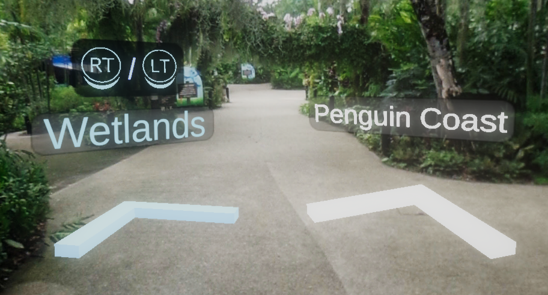
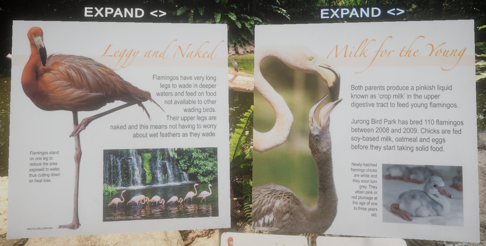
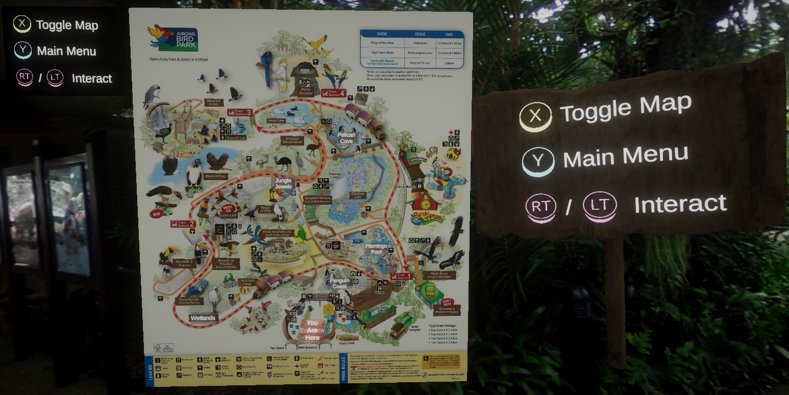
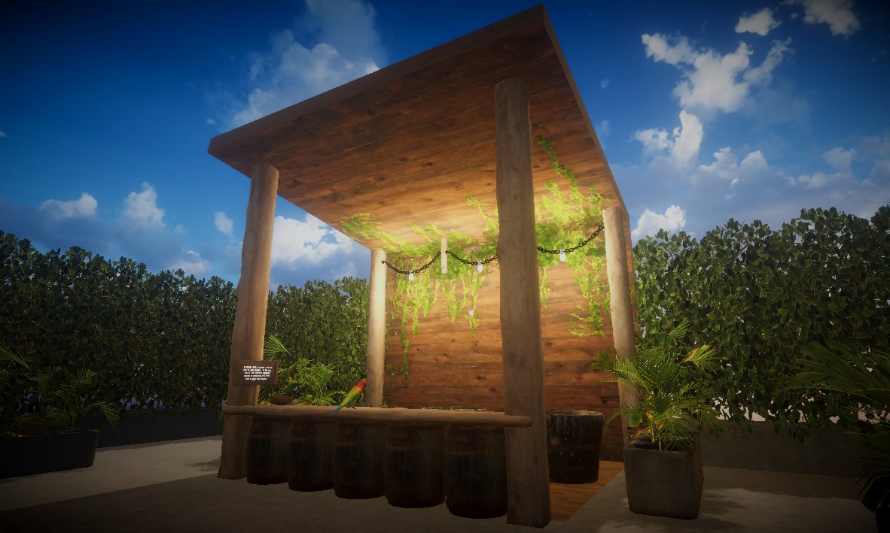

Game Project
Reminiscing Jurong Bird Park
a VR 360 experience.
3D VR Unity Project enhanced with Firebase & Meta Quest
Engine
Unity
Softwares
Firebase | Meta Quest | Autodesk Maya | Adobe Substance 3D Painter | Quixel Bridge
Platform
Meta Quest 2 & Quest 3 & Quest Pro
Duration
4 weeks
Team Size
3
Roles
Lead 3D Artist, Game Level Designer
Project Description
This experience was made in Unity and implemented Meta Quest packages for VR implementation, and with Firebase packages for realtime database features used for the accompanying website.
The project was a team project incorporating Meta Quest & Firebase to make an engaging VR 360 experience about Jurong Bird Park.
Gameplay
The user can experience a visit to Jurong Bird Park in VR as they travel the park with navigation features in the experience.
The experience made use of 360 photos from google maps to simulate the real park with information and gamification that can only be experienced through VR.
The experience is first person in VR and the player can visit different bird enclosures to learn about the different species.
After touring all enclosures, the user can take a quiz to test their knowledge on the birds at Jurong Bird Park. The user can track their progress on the website my teammate made.
This experience is to remind or show what Jurong Bird Park was before its closure and introduce the newly opened Mandai Bird Paradise for users to visit instead.
Environment & Level Design
For this project, I was the lead 3D Artist & a Game Level Designer. As such, I have made the 3D Assets & designed the flow of the enclosures & some features that users can interact with.
Since the game was in 360 VR, all enclosures are 360 photos and includes interactive features. But, I have used lighting and modular building to make the quiz level look vibrant.
The quiz level used modular realistic assets from Quixel Bridge and I had modelled a macaw toy to be used for the quiz.
The levels have features with UI and I did the designs for the UI in the main menus as well. I have also added ambient sound of birds, and parks.
Jurong Bird Park loop: Treasure chest feature is a wishlisted feature.

Bird Enclosures
There are 5 different bird enclosures that users can visit and learn about the wide variety of species.
Using 360 photos of Jurong Bird Park locations, users can go through the experience in VR relatively similar to the actual park.
Each enclosures have their own Info Board about some species and Move Arrows to be used to navigate the experience.
Feature: Move Arrow
The Move Arrow feature is for user navigation to move around the experience.
The arrows can be interactive with by pressing RT or LT on the Oculus Quest controllers.
When the user hovers over the arrows, the color changes to light blue and a sound is played, indicating that the user can click to interact.

Feature: Info Board
The Info Board feature is for user to learn about the different bird species in the respective bird enclosures.
The boards can be interactive with by pressing RT or LT on the Oculus Quest controllers.
When the user hovers over the board, the color of the "EXPAND <>" text changes to light blue and a sound is played, indicating that the user can click to interact.

Feature: Map
The Map feature is for user to navigate and "teleport" to the entrance of the selected enclosure.
The map has different points which showss the location of the enclosures to the users. The user can click on one point to "teleport" to the entrance of that enclosure.
The map also has UI instructions on how to navigate the experience on the top left of the map. There is a sign at the start of the experience to help new users navigate the controls.

Feature: Quiz
The Quiz feature is for user to test their knowledge of the birds they have experienced in the 360 VR experience.
The quiz has 5 simple multiple choice set of questions and the user can grab the toy macaw on the table to toss into one of the buckets to answer the question.
The user would get their score at the end after the quiz and they can always attempt the quiz again.
I had used Quixel Bridge 3D assets to build the quiz scene. The toy macaw was self-made & lighting was baked for efficiency.
